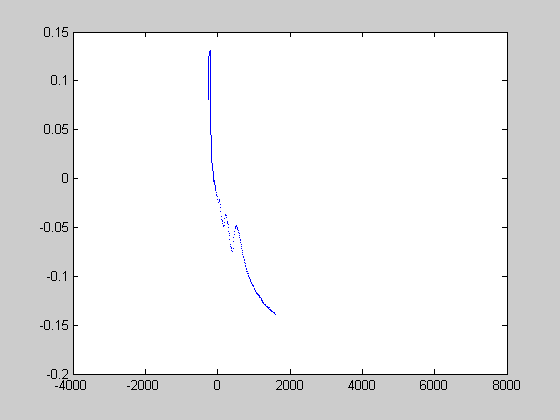

read jarkus example
another example reading JarKus data
Contents
url of netCDF file with jarkus data
url = jarkus_url
url = P:\mcdata\opendap\rijkswaterstaat\jarkus\profiles\transect.nc
transect info
year = 2006; % year of sounding kustvak = 'Noord-Holland'; % area name transect = 3000; % alongshore coordinate
retrieve info about dimensions and variable names
info = nc_info(url);
derive the identifier of the 'altitude'
altitude_id = strcmp({info.Dataset.Name}, 'altitude');
locate the relevant positions along the dimensions
time_id = nc_varget(url, 'time') == year; alongshore_id = nc_varget(url, 'areacode') == getKustvak(kustvak) &... nc_varget(url, 'alongshore') == transect; cross_shore_id = true(size(nc_varget(url, 'cross_shore')));
retrieve the transect data
x = nc_varget(url, 'cross_shore'); start_altitude = [find(time_id, 1, 'first') find(alongshore_id, 1, 'first') find(cross_shore_id, 1, 'first')] - 1; count_altitude = [sum(time_id) sum(alongshore_id) sum(cross_shore_id)]; z = nc_varget(url, 'altitude', start_altitude, count_altitude);
filter for empty values (NaN or -9999)
x = x(z ~= -9999); z = z(z ~= -9999)/100;
plot the transect
figure plot(x, z)